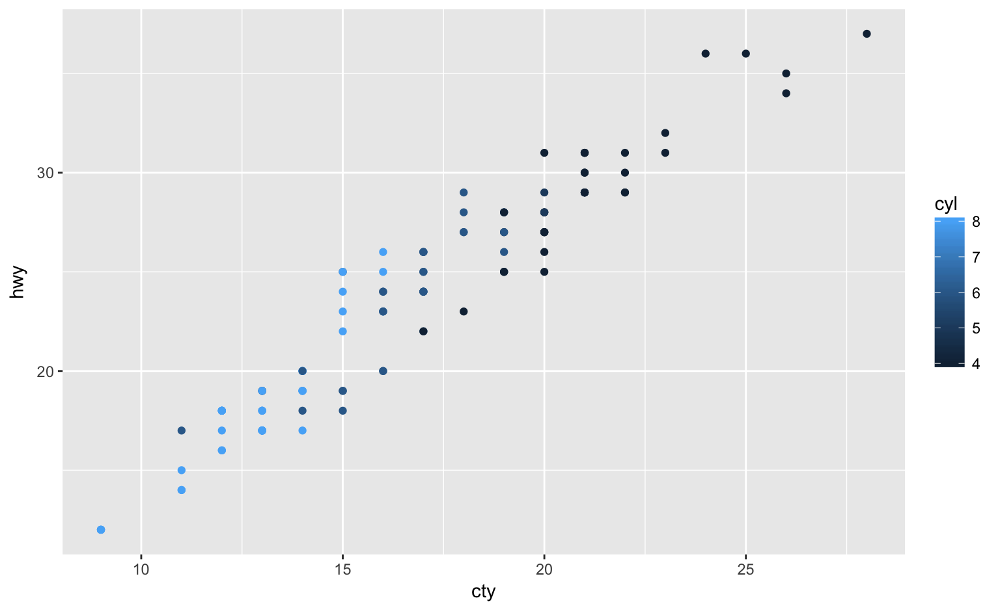
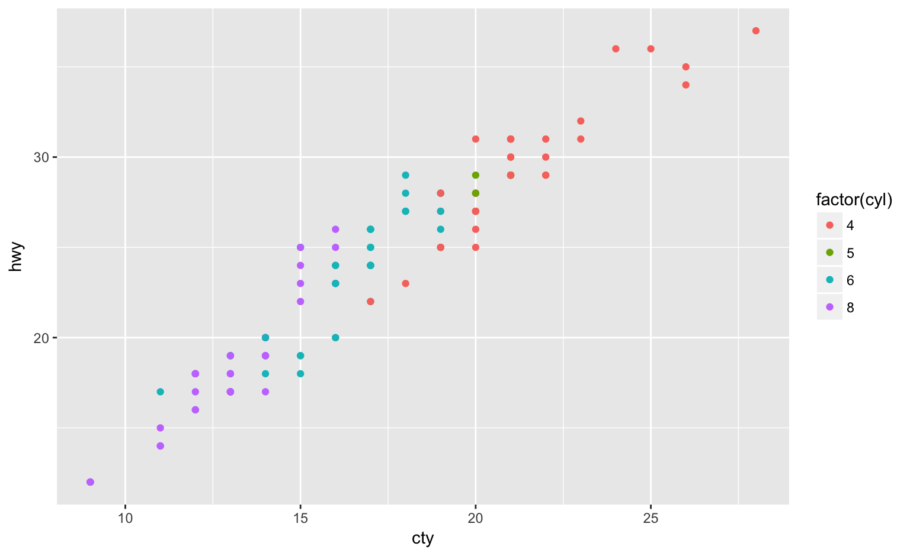
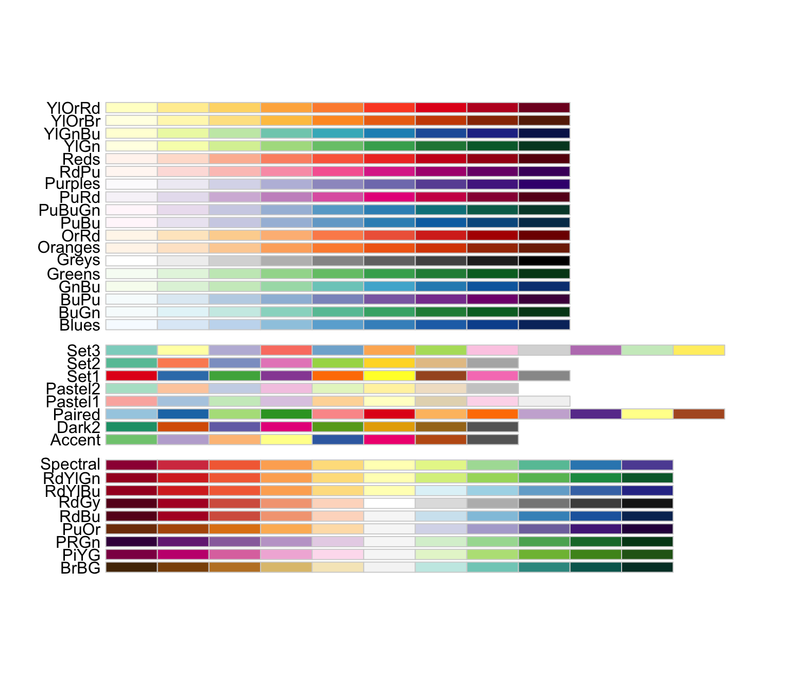

Heike Hofmann
ggplot2 provides defaults …default continuous colour scheme
library(tidyverse)
p1 <- mpg %>% filter(year == 2008) %>%
ggplot(aes(x = cty, y = hwy, colour = cyl)) +
geom_point()p1 + scale_colour_continuous()
default discrete colour scheme
p2 <- mpg %>% filter(year == 2008) %>%
ggplot(aes(x = cty, y = hwy, colour = factor(cyl))) +
geom_point()p2 + scale_colour_discrete()
scale_colour_discrete (scale_colour_hue) and scale_colour_continuous (scale_colour_gradient) are the default choices for factor variables and numeric variablesscale_colour_gradient (..., low = "#132B43", high = "#56B1F7", space = "Lab", na.value = "grey50", guide = “colourbar")
scale_colour_gradient2(..., low = muted("red"), mid = "white", high = muted("blue"), midpoint = 0, space = "Lab", na.value = "grey50", guide = "colourbar")
scale_color_hue (..., h = c(0, 360) + 15, c = 100, l = 65, h.start = 0, direction = 1, na.value = "grey50")
scale_colour_brewer(..., type = "seq", palette = 1, direction = 1)
library(RColorBrewer)
display.brewer.all()